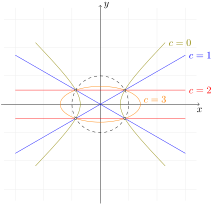
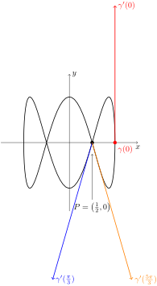

que são, respectivamente, parte de uma hipérbole com focos no eixo \(Ox\) e parte de um par de retas concorrentes na origem (esboçadas abaixo).
Observamos que na outra versão da provas as curvas de nível pedidas são parte de uma elipse e parte de um par de retas paralelas (também indicadas na figura).
Em vista das duas curvas de nível acima se aproximarem arbitrariamente do ponto \((\frac{\sqrt{3}}{2},\frac{1}{2})\text{,}\) temos que ao longo de cada uma dessas curvas a função \(f\) tende ao valor do nível da curva (na verdade é constante igual a esse nível em cada curv).
Isso mostra que \(\lim\limits_{(x,y)\to (\sqrt{3}/2,1/2)}
f(x,y)\) não existe.
Aqui estão os esboços pedidos:

Figura2.1.2.Restrições do domínio e curvas de nível pedidas.
Por que não um esboço do gráfico da função enfatizando os níveis indicados:
Seja \(F(x,y)=
\begin{cases}
\dfrac{\sin x}{y},& \text{ se }y\neq0;\\
\hfill 1,& \text{ se }y=0
\end{cases}\text{.}\) Decida, justificando, se \(F\) é contínua em \((0,0)\text{.}\)
Resposta.
\(0\text{;}\)
Não existe.
\(F\) não é contínua em \((0,0)\text{.}\)
Solução.
Temos ao menos duas soluções diferentes aqui:
Notamos que \(\dfrac{x^2y}{x^4+y^2}\) é limitada (análogo ao caso de \(\dfrac{xy}{x^2+y^2}\)) e que \(e^{-1/(x^4+y^2)}\)tende a zero, já que \(u=x^4+y^2\) é contínua e tende a zero quando \((x,y)\to (0,0)\) e então
mostranto que \(F\) não é contínua em \((0,0)\text{.}\)
3.
Considere a curva \(\gamma\colon
\big[0,2\pi\big]\to\R^2\text{,}\) dada por \(\gamma(t)=\big(\cos t,
\sin(3t)\big)\text{.}\)
Determine os dois instantes \(t\in \big[0,2\pi\big]\) nos quais \(\gamma(t)=\big(\frac{1}{2},0\big)\text{.}\)
Determine as equações das duas retas tangentes à imagem da curva \(\gamma\) no ponto \(P\text{.}\)
Indique na figura o sentido do percurso de \(\gamma\text{.}\)

A imagem de \(\gamma\text{.}\)
Figura2.1.4.A imagem de \(\gamma\text{.}\)
Resposta.
\(t=\frac{\pi}{3}\) e \(t=\frac{5\pi}{3}\text{.}\)
\(r\colon
(x,y)=(\frac{1}{2},0)+\lambda(-\frac{\sqrt{3}}{2},-3)\text{,}\)\(\lambda\in\R\) e \(s\colon
(x,y)=(\frac{1}{2},0)+\lambda(\frac{\sqrt{3}}{2},-3)\text{,}\)\(\lambda\in\R\text{.}\)
O sentido de percurso é aquele dado pelos vetores tangentes acima. Note que não há inversão de sentido do ou "bico"em nenhum momento do percurso , pois \(\gamma\) é de classe \(\mathscr{C}^1\) e as suas duas componentes nunca se anulam simultaneamente.
Solução.
Queremos \(t\in\big[0,2\pi\big]\) tal que \(\gamma(t)=(1/2,0)\text{,}\) ou seja, devemos resolver o sistema
\begin{equation*}
\begin{cases}
\cos(t)&=1/2\\
\sin(3t)&=0
\end{cases}\implies t=\dfrac{\pi}{3}\text{ ou
}t=\dfrac{5\pi}{3}.
\end{equation*}
Retas tangentes à imagem de uma curva \(\gamma\) escrevem-se na forma
Aqui temos \(\gamma(t_0)=\big(\cos t_0,\sin(3t_0)\big)\) e \(\gamma'(t_0)=\big(-\sin
t_0,3\cos(3t_0)\big)\text{.}\) Aplicando os valores de \(t_0\) encontrados acima, temos
O sentido de percurso é o indicado pelos vetores tangentes no ponto \(P\text{.}\) Indicamos o vetor tangente em \(t=0\) para facilitar a visualização (extendemos aqui o conceito de derivada para funções definidas em intervalos fechados, acontece...). Importante notar que a trajetória não faz bicos, suas coordenadas são deriváveis e não e anula simultaneamente.